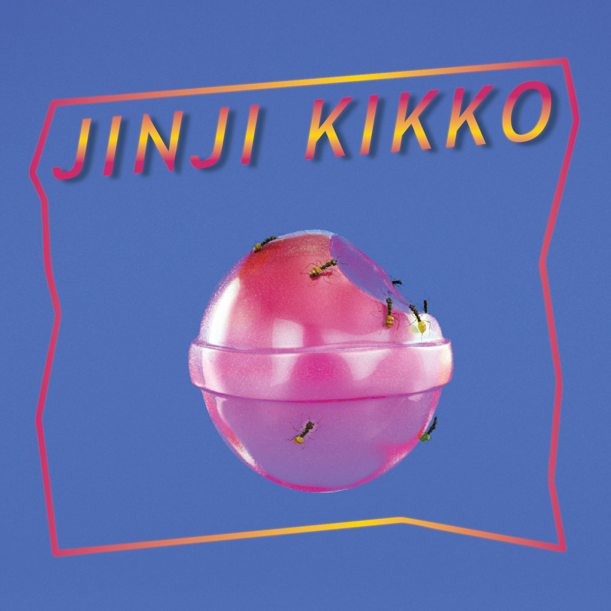
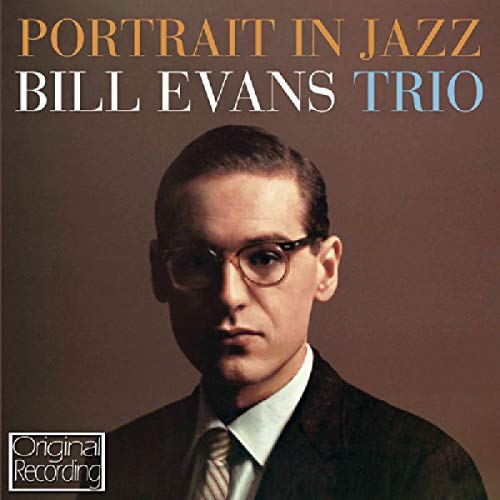
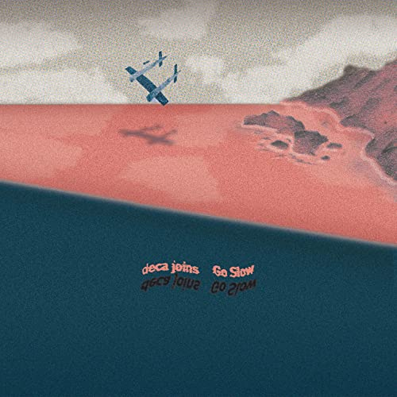

Skip To Main Content
Music Radio
Home
Owen's Music Page
Vivian's Music Page
About Us
Owen's Music Page
Talk Memory by BADBADNOTGOOD
浴室 (Bathroom) by Deca Joins

JINJI KIKKO by Sunset Rollercoaster
The Long Way Home by Aaron Taylor

Portrait in Jazz by Bill Evans
Ryo Fukui in New York by Ryo Fukui
SOFT STORE by Sunset Rollercoaster
Getz/Gilberto by Stan Getz & Joao Gilberto
Waltz for Debby by Bill Evans

海浪 (Waves) by Deca Joins
Sol by Teo
Jassbusters by Connan Mockasin